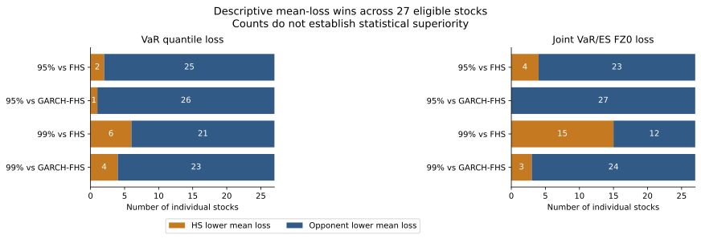
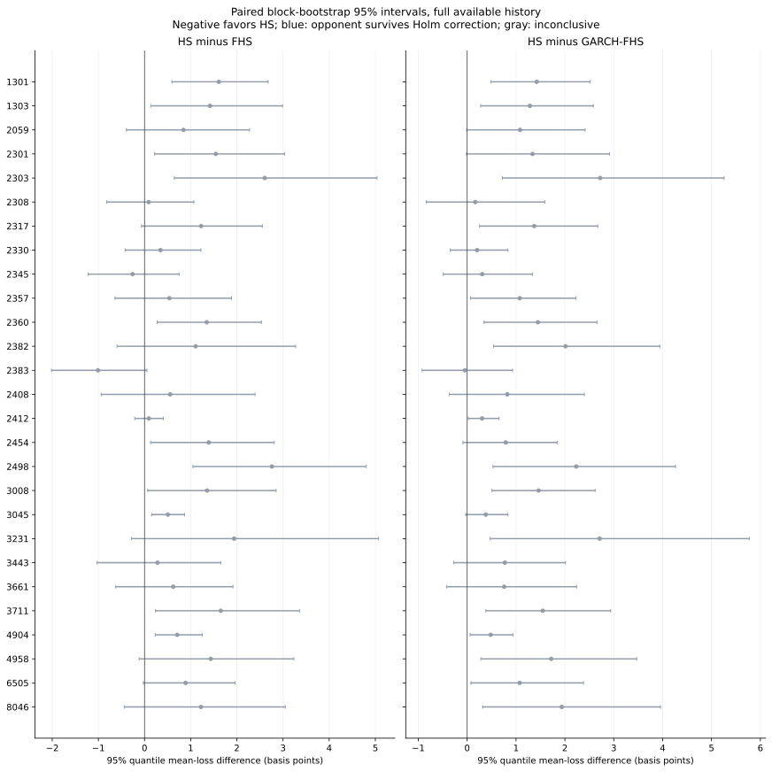

要求截止日：2026-09-30 · 快照擷取：2026-10-01T08:41:25.449623+00:00
成功 27 檔，失敗 30 檔；批次停止：False。成功股票更新至 2026-09-30；失敗股票保持備份狀態，沒有宣稱完成更新。2330 的兩個缺值日期由官方事件重建整段因子鏈。交易所證實 2887（2024-08-22）、2317（2025-07-30）都是無成交日；2317 更新保留缺口，2887 因事件衝突未提交。正式資料與模型設定均未更改。本表為已保存原始 HTTP 回應的離線重播；來源證據不完整時回傳不可用，不額外擷取或合成資料。
| 股票 | 拒絕更新原因 |
|---|---|
| 0050 | Official source cannot verify missing/zero price on 06/11/2025. |
| 00835B | Source failure (HttpRequestException, HTTP ServiceUnavailable); no prices were committed. |
| 1216 | Unmatched/ambiguous action on 2023-08-04. |
| 2002 | Unmatched/ambiguous action on 2024-07-26. |
| 2207 | Unmatched/ambiguous action on 2023-08-04. |
| 2327 | Source failure (HttpRequestException, HTTP ServiceUnavailable); no prices were committed. |
| 2344 | Source failure (HttpRequestException, HTTP ServiceUnavailable); no prices were committed. |
| 2368 | Source failure (HttpRequestException, HTTP ServiceUnavailable); no prices were committed. |
| 2395 | Corporate-action factor conflict on 2020-07-31. |
| 2449 | Corporate-action factor conflict on 2020-07-13. |
| 2603 | Source failure (HttpRequestException, HTTP ServiceUnavailable); no prices were committed. |
| 2880 | Source failure (HttpRequestException, HTTP ServiceUnavailable); no prices were committed. |
| 2881 | Source failure (HttpRequestException, HTTP ServiceUnavailable); no prices were committed. |
| 2882 | Source failure (HttpRequestException, HTTP ServiceUnavailable); no prices were committed. |
| 2883 | Source failure (HttpRequestException, HTTP ServiceUnavailable); no prices were committed. |
| 2884 | Source failure (HttpRequestException, HTTP ServiceUnavailable); no prices were committed. |
| 2885 | Source failure (HttpRequestException, HTTP ServiceUnavailable); no prices were committed. |
| 2886 | Corporate-action factor conflict on 2020-08-13. |
| 2887 | Corporate-action factor conflict on 2020-08-11. |
| 2890 | Source failure (HttpRequestException, HTTP ServiceUnavailable); no prices were committed. |
| 2891 | Source failure (HttpRequestException, HTTP ServiceUnavailable); no prices were committed. |
| 2892 | Source failure (HttpRequestException, HTTP ServiceUnavailable); no prices were committed. |
| 3017 | Source failure (HttpRequestException, HTTP ServiceUnavailable); no prices were committed. |
| 3037 | Source failure (HttpRequestException, HTTP ServiceUnavailable); no prices were committed. |
| 3653 | Corporate-action factor conflict on 2020-08-20. |
| 3665 | Source failure (HttpRequestException, HTTP ServiceUnavailable); no prices were committed. |
| 5880 | Source failure (HttpRequestException, HTTP ServiceUnavailable); no prices were committed. |
| 6669 | Source failure (HttpRequestException, HTTP ServiceUnavailable); no prices were committed. |
| 6919 | Source failure (HttpRequestException, HTTP ServiceUnavailable); no prices were committed. |
| 7769 | Source failure (HttpRequestException, HTTP ServiceUnavailable); no prices were committed. |
本次只納入批次版本一致、已驗證至要求截止日的價格；交易日曆使用凍結的 FinMind 官方衍生交易日資料。 個股需至少 1,000 個有效 OOS 日。每檔有自己的連續有效期間；更新失敗與短歷史股票列在涵蓋表中。本次樣本不可直接與先前不同樣本的勝出數比較。
| 指標 | 信心水準 | 比較對手 | 個股數 | HS 平均損失較低 | HS 顯著較好 | 對手顯著較好 |
|---|---|---|---|---|---|---|
| quantile | 95% | FHS | 27 | 2 | 0 | 0 |
| quantile | 95% | GARCH-FHS | 27 | 1 | 0 | 0 |
| quantile | 99% | FHS | 27 | 6 | 0 | 0 |
| quantile | 99% | GARCH-FHS | 27 | 4 | 0 | 0 |
| fz0 | 95% | FHS | 27 | 4 | 0 | 0 |
| fz0 | 95% | GARCH-FHS | 27 | 0 | 0 | 0 |
| fz0 | 99% | FHS | 27 | 15 | 0 | 0 |
| fz0 | 99% | GARCH-FHS | 27 | 3 | 0 | 0 |
Quantile loss 與 FZ0 越低越好。顯著勝出需要信賴區間完全位於相應一側，且 Holm 修正 p < 0.05。


固定 20 檔組合含尚未驗證的成分股，因此本次不產生組合排名；不能用未更新資料代表最新組合風險。 等權組合每檔 5%；集中組合 2330 為 50%，其餘 19 檔分配剩餘 50%，每日再平衡。預先固定股票名單：2330, 2454, 2308, 2317, 3711, 2303, 2383, 2891, 2344, 2345, 2881, 2882, 1303, 2382, 2887, 2360, 3017, 2885, 2412, 2886。
| 組合 | 信心水準 | 模型 | 天數 | 平均 quantile loss | 平均 FZ0 | 違約率 | Kupiec p | 獨立性 p | 實際尾損 / 預測 ES |
|---|
| 組合 | 水準 | 指標 | HS − 對手 | 95% CI | 原始 p | Holm p |
|---|
各工作負載獨立取最後 252 個可評分日，並非完整一致的一年。99% 尾部樣本很少，個別結果不能推廣為全股票或 ES 整體優勢。
| 股票 | 水準 | 指標 | 對手 | 顯著較好者 | Holm p |
|---|---|---|---|---|---|
| 2408 | 99% | quantile | GARCH-FHS | HS | 0.0216 |
| 2408 | 99% | fz0 | GARCH-FHS | HS | 0.027 |
使用正式 C# HS／一般 MVEWMA-FHS 與 Python VT-GARCH-t + Joint-Vector FHS；保守 p99 變體不納入比較。訓練窗 252 連續交易日、一天預測、95%／99%、5,000 模擬、GARCH 每 21 日重估。資產 log return，組合與 HS 使用 Σw·expm1(r) 的 simple return。僅使用預測日前的資料；缺漏切段，不插補。
Quantile loss 與 FZ0 聯合 VaR/ES 評分使用同日成對比較。Circular block bootstrap：21 日、10,000 次、95% CI，只在相同連續區段內取樣；每個指標、信心水準及期間獨立形成 Holm 家族。校準另看 Kupiec、獨立性與尾損／ES；預期或實際尾部樣本少於 20 時標示不足。
模型／評分失敗：0。交易日曆：FinMind TaiwanStockTradingDate。現有證券名單有存活者偏誤，供應商資料與更新失敗造成樣本限制。正式 API 的報酬單位問題仍須另行修正；本研究在輸入端統一單位，沒有切換模型或部署後端。
| 股票 | 有效 OOS 天數 | 首日 | 末日 | 主分析狀態 |
|---|---|---|---|---|
| 1216 | 0 | — | — | unverified price adjustment batch |
| 1301 | 1428 | 2020-11-13 | 2026-09-30 | 納入 |
| 1303 | 1428 | 2020-11-13 | 2026-09-30 | 納入 |
| 2002 | 0 | — | — | unverified price adjustment batch |
| 2059 | 1428 | 2020-11-13 | 2026-09-30 | 納入 |
| 2207 | 0 | — | — | unverified price adjustment batch |
| 2301 | 1428 | 2020-11-13 | 2026-09-30 | 納入 |
| 2303 | 1428 | 2020-11-13 | 2026-09-30 | 納入 |
| 2308 | 1428 | 2020-11-13 | 2026-09-30 | 納入 |
| 2317 | 1174 | 2020-11-13 | 2026-09-30 | 納入 |
| 2327 | 0 | — | — | unverified price adjustment batch |
| 2330 | 1428 | 2020-11-13 | 2026-09-30 | 納入 |
| 2344 | 0 | — | — | unverified price adjustment batch |
| 2345 | 1428 | 2020-11-13 | 2026-09-30 | 納入 |
| 2357 | 1428 | 2020-11-13 | 2026-09-30 | 納入 |
| 2360 | 1428 | 2020-11-13 | 2026-09-30 | 納入 |
| 2368 | 0 | — | — | unverified price adjustment batch |
| 2382 | 1428 | 2020-11-13 | 2026-09-30 | 納入 |
| 2383 | 1428 | 2020-11-13 | 2026-09-30 | 納入 |
| 2395 | 0 | — | — | unverified price adjustment batch |
| 2408 | 1428 | 2020-11-13 | 2026-09-30 | 納入 |
| 2412 | 1428 | 2020-11-13 | 2026-09-30 | 納入 |
| 2449 | 0 | — | — | unverified price adjustment batch |
| 2454 | 1428 | 2020-11-13 | 2026-09-30 | 納入 |
| 2498 | 1428 | 2020-11-13 | 2026-09-30 | 納入 |
| 2603 | 0 | — | — | unverified price adjustment batch |
| 2880 | 0 | — | — | unverified price adjustment batch |
| 2881 | 0 | — | — | unverified price adjustment batch |
| 2882 | 0 | — | — | unverified price adjustment batch |
| 2883 | 0 | — | — | unverified price adjustment batch |
| 2884 | 0 | — | — | unverified price adjustment batch |
| 2885 | 0 | — | — | unverified price adjustment batch |
| 2886 | 0 | — | — | unverified price adjustment batch |
| 2887 | 0 | — | — | unverified price adjustment batch |
| 2890 | 0 | — | — | unverified price adjustment batch |
| 2891 | 0 | — | — | unverified price adjustment batch |
| 2892 | 0 | — | — | unverified price adjustment batch |
| 3008 | 1428 | 2020-11-13 | 2026-09-30 | 納入 |
| 3017 | 0 | — | — | unverified price adjustment batch |
| 3037 | 0 | — | — | unverified price adjustment batch |
| 3045 | 1428 | 2020-11-13 | 2026-09-30 | 納入 |
| 3231 | 1428 | 2020-11-13 | 2026-09-30 | 納入 |
| 3443 | 1428 | 2020-11-13 | 2026-09-30 | 納入 |
| 3653 | 0 | — | — | unverified price adjustment batch |
| 3661 | 1428 | 2020-11-13 | 2026-09-30 | 納入 |
| 3665 | 0 | — | — | unverified price adjustment batch |
| 3711 | 1428 | 2020-11-13 | 2026-09-30 | 納入 |
| 4904 | 1428 | 2020-11-13 | 2026-09-30 | 納入 |
| 4958 | 1344 | 2021-03-24 | 2026-09-30 | 納入 |
| 5880 | 0 | — | — | unverified price adjustment batch |
| 6505 | 1428 | 2020-11-13 | 2026-09-30 | 納入 |
| 6669 | 0 | — | — | unverified price adjustment batch |
| 6919 | 0 | — | — | unverified price adjustment batch |
| 7769 | 0 | — | — | unverified price adjustment batch |
| 8046 | 1428 | 2020-11-13 | 2026-09-30 | 納入 |
快照 SHA-256：60a427e243eef2b6d324fb06716ae646ce3c93b1aa53f5bb78221ee11eedbd1b。原始備份、來源快照、逐日預測與完整比較 CSV 位於本地 exports/price-repair/audited-comparison，不提交原始價格資料。聚合報告與 PNG／SVG／PDF 圖表可分享。
{
"baseCommit": "5ec4093252b4f625f82838378fe62d08ed8dfbc3",
"garchRuntime": {
"algorithmVersion": "vt-garch-t-joint-fhs-v1",
"packages": {
"arch": "8.0.0",
"numpy": "2.5.1",
"pandas": "3.0.5",
"pydantic": "2.13.4",
"scipy": "1.17.0",
"statsmodels": "0.14.6"
},
"python": "3.13.14 (main, Aug 5 2026, 01:09:38) [GCC 14.2.0]"
},
"sourceSha256": {
"research/EquityLens.RiskEvaluation/Program.cs": "168db92db377a888ec8490bb2e4ab753961af1a608432a1de46ed05995555ba2",
"scripts/refresh_tw_prices.py": "423165d662c4243f787764e2643de3a3be2450e123379941a7dec665ce23d5a0",
"scripts/report_hs_comparison.py": "51c7d99f6db66a7f2c276ef0d661dcebe33034a74073ff49cb567bb0ef19014b",
"scripts/run_risk_research_container.py": "52074643a89512aa5974d0cf89456ac948b3a015238b86fdf26b7f8df606f8fb",
"src/EquityLens.Api/Domain/Calculations/RiskMath.cs": "7c520cd0e0c24c3d974ed2e0ca16d805d783acf06d60d09187fec01775ba5265",
"src/EquityLens.Api/Services/RiskAnalysis/CSharpRiskBacktestEngine.cs": "cbdfaf3429304c22104b9805f2612ad9aa345a8a1c911e7c272870a85925351e",
"src/EquityLens.Mathematics/src/equitylens_mathematics/engine.py": "f97ab0d3678d07fcc9adbd13349a8b676baa7155066d196d1204c609ee9270cf",
"src/EquityLens.Mathematics/src/equitylens_mathematics/garch.py": "bd3960817b54e82fb9d5fe9b87ded504a86f431a6537413cf8cda5d2ad873aca",
"src/EquityLens.Mathematics/src/equitylens_mathematics/research/hs_comparison.py": "31d12a7a2d37487c55d1ee142550947e2d059ec2414952ebb296ff352b8c3f80"
}
}